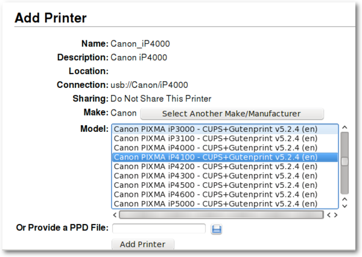

After writing a document, transferring photos from your camera, or creating your own images with GIMP, you would probably like to print them out with your printer. To do this, you need to have a printer already installed on your system. "Manage Printing", which is found under "System" in the main application menu, handles the installation and general management of your printers. (Ensure that "CUPS" is enabled in the system services , or Manage Printing will not start properly).
If you are buying a new printer, it is recommended to check the availability of Linux drivers beforehand from the Open Printing database(or search on the Internet). Some companies offer printer drivers for Linux, but this is less common than desired and could involve a lengthy installation process. For most Linux friendly printers, you have to install drivers such as gutenprint or HPIJS, both of which are available from the repositories.

For setting up a network printer, please consult the Salix wiki.